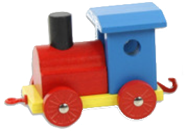
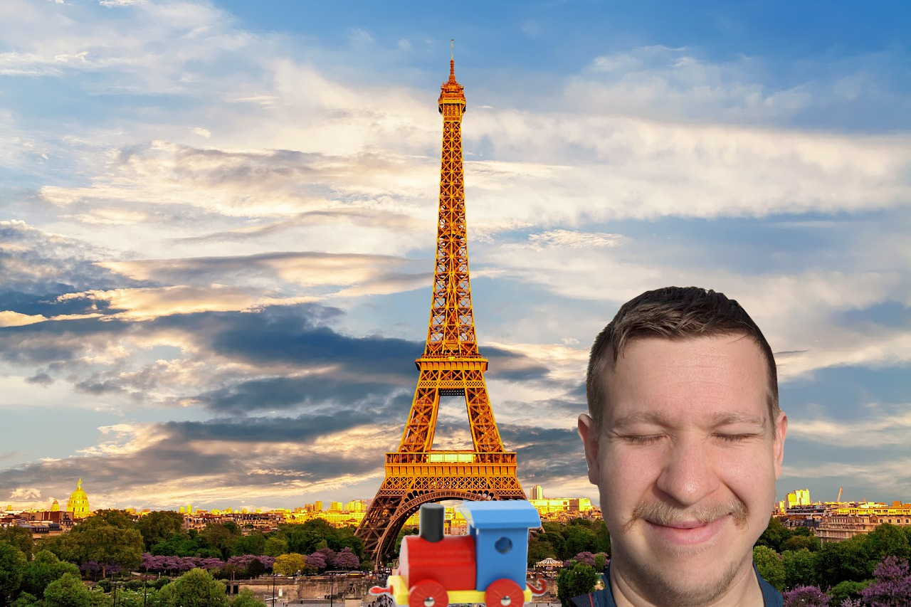
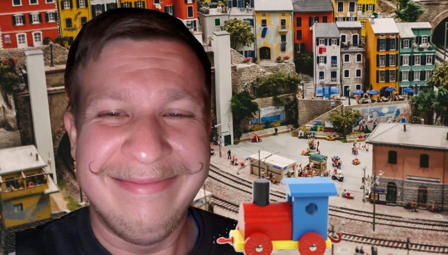
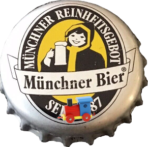
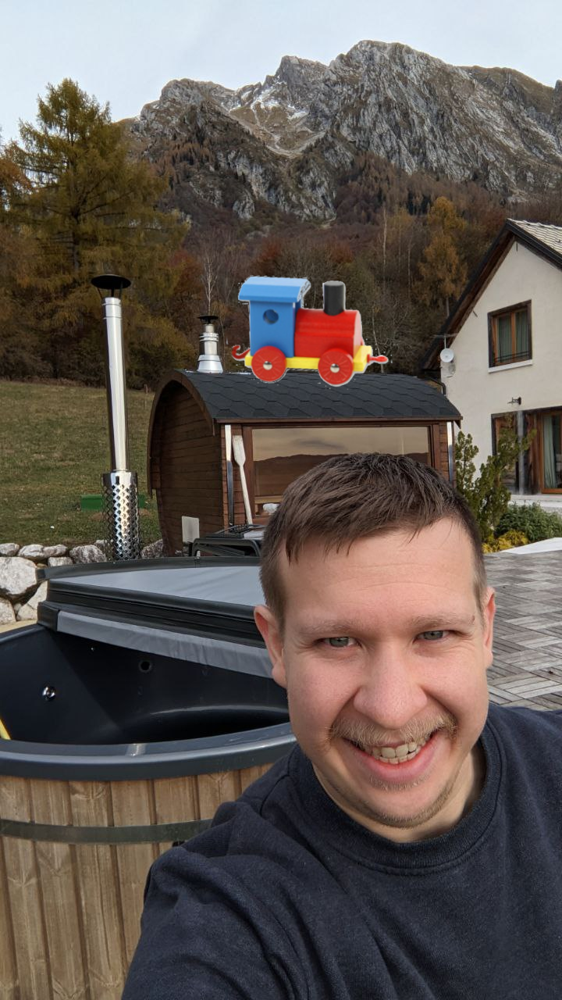
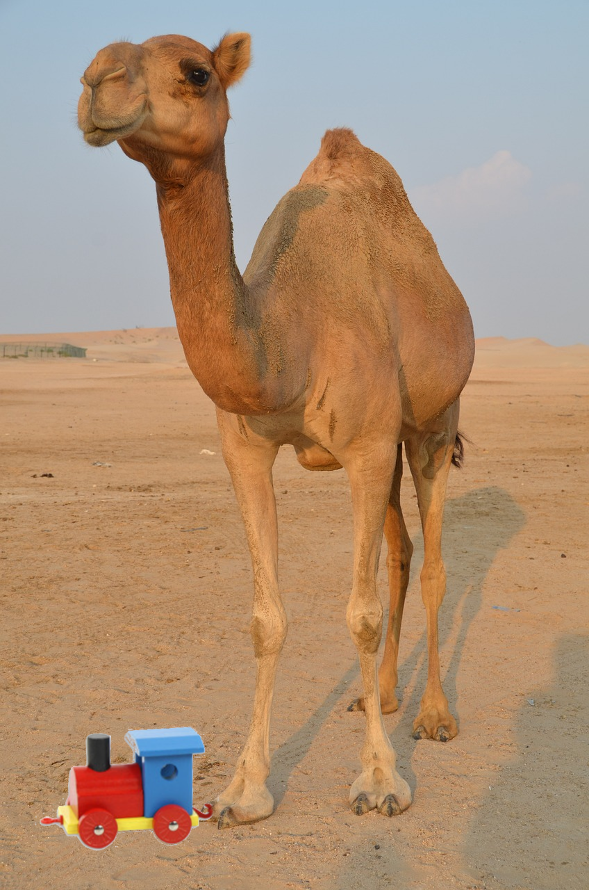
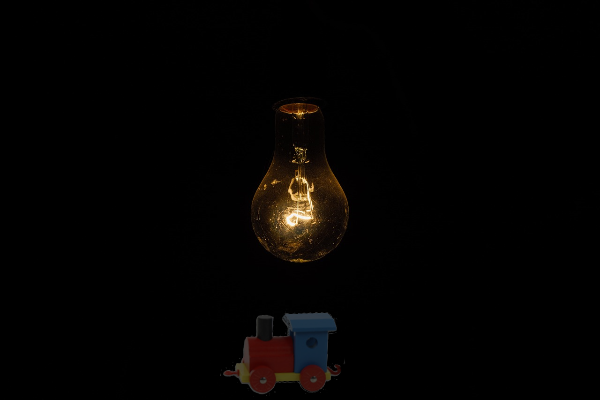
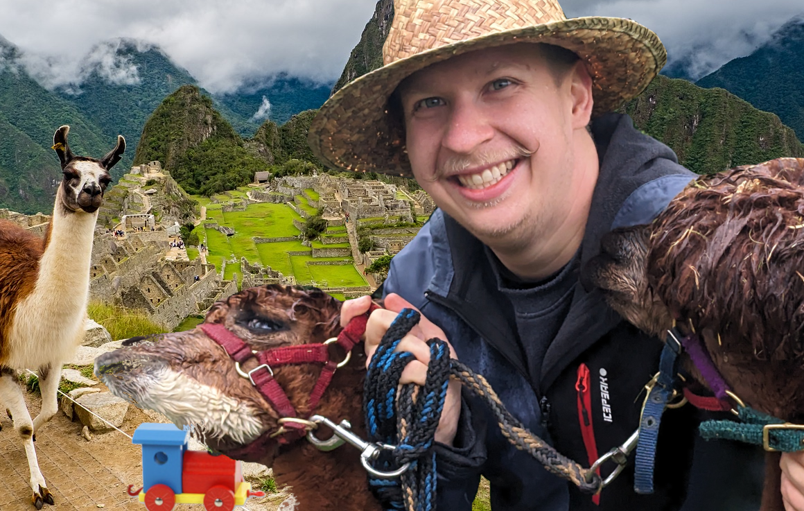

Simon's Weihnachtsgeschichte 2023
1. Vorwort
2. Am Bahnsteig nichts neues…
Es ist Winter, bitterlich kalt und 2uhr in der Nacht. Leider hat das niemand der MVG gesagt. Die Eiszapfen bilden sich unter den Nasen. Hoffnungslos starren wir alle auf die Anzeigetafeln. Anstelle einer Zahl, die die Minuten bis zur rettenden S-Bahn signaliert, prankt dort ein anderes Symbol. Es soll wohl die Verspätung symbolisieren, jedoch erinnert es mich mehr an einen Wecker. Ein Wecker, der im Zorn gen Wand geworfen wird. Nur wann schlägt der Wecker auf? Wann zerschellt der Wecker artgerecht in all seine Einzelteile? Wann kommt meine scheiß S-BAHN???!
Ich wickele mich enger in mein Jäckchen, nehme einen Schluck vom Jack(Daniels)chen und träume von einer besseren Welt. Eine Welt, in der die Bahn so zuverlässig ist, dass man mit dem 49€ Ticket sogar eine Weltreise machen kann…
3. In 80 Zügen um die Welt
Meine Reise beginnt in einem Gentlemans Club in London, in dem Sir Henry Winterbottom mit mir wettet.
"Ich wette Sie schaffen es nicht einmal um die Erde zu reisen! Und zwar mit dem Zug!"
Breit grinsend wähnt er sich schon sieges sicher, denn er hat wohl nichts von dem Eurotunnel gehört. In nur 40 Minunten kann man nämlich vom Münchner Hauptbahnhof zum Flughafen fahren. Oder von Frankreich nach England. Langsam klingt dieser Transrapid gar nicht mehr so unsinnig. Weil ich aber ein fairer Spieler bin greife ich in meine Jackentasche und stelle den möchtegern Schummelbaron vor vollendete Tatsachen. Auf seinen kleinen Rädern rollt eine Holzlok über den Tisch. Dem Britten fällt das Monokel vom Sockel und die Schnappatmung setzt ein.
"Wie Sie wollen Herr Winterpopo, ich werde einmal um die Weltreisen, und zwar mit diesem Zug!"

4. Paris Stadt der Kellner
Am morgen des 2. Tages komme ich per Zug in der Stadt der Liebe und Croisants an. Ich kann immer noch nicht glauben, das die Schaffner mein 49€ ticket akzeptiert haben. Vielleicht dachten die auch
"Schick den Irren nach Frankreich, dann ist er nicht mehr unser Problem…"
als ich Ihnen meine kleine Holzlok mit samt Weltreiseplan offenbart hatte. Die Zugreise war zwar kurz aber ich fühle mich gewappnet für ein kleines Frühstück. Der Garcon im Café ist stillecht unhöflich - meine 5 Brocken Französisch reichen a) um mit Händen und Füßen zu bestellen, b) ihn in seinem Nationalstolz zu kränken und c) mir um zu kapieren dass er eine Beleidung murmelt. Herrlich da fühlt man sich wie ein echter Tourist. Jetzt bräuchte ich nur noch eine riesige Kamera und kurze Hosen. Da fällt mir ein, ich muss gemäß meiner Wette ein Foto von mir, der Lok und einem eindeutigen Erkennungsmerkmal der Stadt machen, also dann.

Nach meinem äußerst leckerem Frühstück begebe ich mich in die unzähligen Museen der Stadt - Bildung muss sein. Im Museums Shop finde ich eine Postkarte mit möglichst vielen Großen Französischen Wörtern - da wird sich der Marc-Angelo freuen. Da wir leider nicht mehr im Zeitalter der Brieftauben leben, muss ich jetzt eine Briefmarke kaufen. Laut google würde sich nette Verkäuferin über so etwas wie "Je voudrais acheter cinq timbres" freuen. Soweit kommt es allerdings gar nicht. Vor mir in der Schlange spielt sich ein Festspiel für die Sinne ab. Eine ältere Dame wedelt mit einem Weckglas vor den Augen der Postmitarbeiterin herum. Am Gesicht der Armen erkenne ich, dass sie ungefähr soviel von dem wirren gebrable versteht wie ich - zero. Im inneren des Glases schwabt eine dickflüssige braune Masse hin und her. Es riecht nach Weihnachten, Gewürze, Braten. Die alte will doch nicht ernsthaft ein Glas Soße per Post verschicken? Die hilflosen Erklärungsversuche der Postdame kann ich zwar nicht verstehen, aber vermutlich sagt sie sowas wie:
"Aber Madame, ohne Knödel kann da leider nichts für Sie machen."
Bevor die Szene eskalieren kann nimmt Soßenladie lächelnd reiß aus und lässt und Streblichen unschlüssig zurück. Sollen wir ihr folgen? In den Wald? In ihr Hexenhaus? Ich trete einen Schritt vor. "Briefmarken?", frägt mich die Postfrau, die zufälligerweise Deutsch kann.
Bevor es weiter geht laufe ich auf der Straße noch Sebi über den Weg. Nachdem wir erstaunlich lange nach einem veganen Imbiss gesucht haben müssen wir uns leider mit mehreren Flaschen Wein stärken.
5. Miniaturwelten
Wer sich nicht mit Geographie auskennt wird sich nicht darüber wundern, dass mein nächster Halt in Hamburg an der Elbe ist. Also Fischbrötchen und Hafenrundfahrt. "Macht mal ein Foto von mir", bitte ich Sara und Phillip. Meine beiden Leipziger habe ich nämlich zufälligerweise gestern Abend im goldenen Handschuh getroffen. Wir stehen gerade in der berühmten Miniatur Wunderwelt.

Hamburg hat viel zu bieten. Neben dem zuvor erwähnten Miniaturwelten und Fischbrötchen kann man auch toll abstürzen. Außerdem wundere ich mich den halben Abend wieso alle so komisch ihre Hälser verenken um an mir vorbei durch das Fenster der Kneipe zu starren. Als ich selbst mal über die Schulter schaue wird es mir klar. Die Aufdringlichen, Leichtbekleideten die so interessant, sind nicht nur Junggesellenabschiedler. Nachdem wir uns die Böden der Biergläser ausgiebig angeschaut haben, schwanken wir weiter - andere Kneipen haben auch schöne Gläser.
6. Eskiomobier in München
Der ICE Richtung München über Leipzig macht das Geschäft der Saison. Unsere bierbegeisterte Gruppe wird irgendwann sogar bedient und muss nichtmal zum Bordbistro gehen - da soll noch einer was gegen die Deutsche Bahn sagen - hust. Meine Freunde verlassen mich nach und nach und schließlich bin ich ganz alleine als mein Zug in München einfährt. In der schönsten Millionenstadt Oberbayerns habe ich nur einen kurzen Aufenthalt bevor mich der nächste Zug richtung Süden bringen wird. Ich stehe mir also wartenderweise die Beine in den Bauch. Es kommt wie es kommen muss mein Zug hat Verspätung und nach 2 Kaffees und 2 weiteren Stunden überlege ich schon ob ich meine Reiseroute nicht ändern soll. Eine schwerverständliche aber nette Stimme verspricht mir das es jetzt bald weitergeht und empfielt mir und anderen Wartegästen sich doch etwas zum essen und trinken schmecken zu lassen. Ganz gemäß dem Motto 7 Bier sind auch 2 Schnitzel begebe ich mich zu einem der Stehcafes. Ich erstehe mir ein nettes Bier. Beim Entkorken bemerke ich den verbogene Deckel, den ein anderer Hopfenteeenthusiast achtlos fallen gelassen hat. Darauf der berühmte Münchner Eskimo.

Seit ich ein Kind bin wundere ich mich, was hat denn Monaco di Baviera mit den Inuits zu tun? Bevor ich dieses Mysterium aufklären kann erklingt mein Smartphone engelsgleich. Besser gesagt das Sociale Network für Alkoholiker und solche die es werden wollen teilt mir mit das die liebe Laura gerade ein Bier trinkt und Leute zum Anstoßen sucht. Da kann ich mich nicht Lumpen lassen, wann ist man denn schonmal in der Stadt? Die app gibt mir 3 Möglichkeiten auf die Pushbenachrichtigung zu reagieren a) Prost, b) Warte ich komm auch noch oder c) BIER!. Na da kann man ja nicht falsch antworten.
7. Alpenüberquerung
Nach Hamburg und München sind Kopfschmerztabletten meine besten Freunde. Wenn man sich mit Laura auf ein Bier trifft ist sicher es wird lustig, es wird viel getrunken und egal wie sehr man sich vorgenommen hat rechtzeitig zu gehen man verpasst seinen Zug. Lustigerweise war jedoch der letzte Punkt in diesem Fall gar nicht so. Das lag jedoch nicht daran, dass ich es dieses mal geschafft hatte mich rechtzeitig los zu eisen - der Abend wurde wie zu erwarten viel später als geplant - allerdings spielte der Zug in meinem Sinne mit und kam nicht. Einen Zug der nicht kommt, den kannst du auch nicht verpassen. Deswegen, und wegen ein paar Bier zu viel, sitze ich jetzt auch nicht im ICE, sondern in einer Regio, die im weitesten Sinne mehr S-Bahn als Zug ist. Mein neuer Plan, der gestern Abend noch sehr viel Sinn ergab ist, per Zug nach Garmisch und per Fuß über die Grenze. Wieso sich das gestern, auch nur geringfügig weniger hirnrissig angehört hat als jetzt, ist mir auch schleierhaft. Jedenfalls bin ich gerade um jeden Moment, in dem ich nicht denken muss froh. Der Zug hält an und ich stolper heraus. Und was dürfen meine glasigen Augen erblicken - Raul, Nina und Dani der Hund warten auf mich. Jetzt macht das alles Sinn. Der betrunken Simon von gestern Abend hat sich wohl gedacht er macht dem nüchteren Simon eine Freude und verabredet sich zum Wandern. Raul kann sich ob meines Zustandes ein Grinsen nicht verkneifen, Dani der Hund ist voller Vorfreude. Vor dem Aufstieg machen wir noch ein Foto, dessen Inhalt ich aus Datenrechtlichen Gründen, und nicht weil ich darauf komplett fertig aussehe, leider nicht zeigen darf. Aber als Beweis meiner vielen Gipfelbesteigungen habe ich ein anderes angehängt.
8. Intalien in der Sauna
Nach Kaiserschmarn und Hüttenzauber sind wir dann auch irgendwann wieder herab gestiegen von unsrem hohen Berg. Derselbe Zug brachte uns zurück nach München wo ich auch die Nacht verbrachte. Am nächsten morgen in alter Frische sitze ich im Auto Richtung Süden. Meine Reiselok steht auf dem Amaturenbrett, die darf ich um Himmelswillen nicht im Mietauto vergessen. Ja ich gebe es zu das mit dem Zug war mir dann doch ein bisschen zu doof. Jetzt also auch. Okay man kann sich auch über das Autofahren ärgern. Spätestens wenn man sich mit Vignette, Streckenmaut, Kettenpflicht ja?nein? etc. rumschlangen muss. Ich tucker also über den Brenner und hinunter nach Bozen. In Bozen komme ich genau passend zum Mittagessen an. Bzw. ich ich bin zu früh, aber Helden wie ich lösen so ein Problem dadurch das sie sich multiple male in einer kleinstadt verfahren auf der suche nach dem Parkhaus im Stadtzentrum. Pünktlich zur Mittagszeit verlasse ich das Parkhaus am Waltherplatz und spaziere voller Vorfreude los. Ich biege ums Eck und laufe in Yumi und David hinein. (Dem werten Leser fällt hier vielleicht auf, dass es etwas ungewöhnlich ist, dass ich auf meiner Reise immer passend in meine Freunde treffe und wir in der Realität eventuell gemeinsam angereist sind.) Um Yumis Geburtstag zu feiern entscheiden wir spontan eine Berghütte mit Sauna und Whirlpool für das Wochenende zu mieten.

9. Lorenzo von Arabien
Meinen Mietwagen habe ich in Venedig gegen ein Schiff eingetauscht mit dem ich übers Meer, den Suez kanal runter fahren wollte. An Ägypten vorbei, durch den Golf von Aden und ab richtung Australien. Leider sind Schiffe deutlich schwere zu steueren als man denkt. Wer sich noch an die Schlagzeilen erinnert von dem Schiff das den Suez Kanal blockiert hat weil es sich quer gestellt hat, ja. Ernsthaft die dinger sind echt schwerer zu steuern als man denkt. Anyways. Mein riesiges Containerschiff war im Tausch soviel Wert um meinen nächsten Mode-of-Transportation zu erhalten.

Kamele mit zwei Höckern nennt man Trampeltiere. Und manche bezeichnen die netten Paarhufer als Wüstenschiffe. Gleichzeitig ist eine Karawane eine art Zug und daher würde ich sagen ich reise per Zug durch die hier nicht näher definierte Wüste. Schließlich dachte ich mir Die Hitze ist gar nicht so extrem, stell dir einen Zug der deutschen Bahn im Sommer vor, dass kommt ganz gut hin. Wie es sich für einen guten Zug gehört halten auch wir praktisch überall. Ich dachte nie, dass man bei einer Reise durch die Wüste genug von Oasen bekommen kann. Aber spätestens nach dem 5. Stop für Selfies, zwischen Fake Palmen und Einheimischen, die aggressiv irgendwelchen Schrott los werden reicht es mir. Ich umfasse die Holzlok unter dem Gewand und gebe dem Kamele die Sporen. Hinter mir höre ich noch aufgeregte Stimmen auf Arabisch und Amerikaner, die denken das das eine Showeinlage ist: "Amazing". Mein Wüstenschiff wird vom Tret- zum Speedbot und schießt über die Dünen. Ich kralle mich krampfhaft fest und merke gar nicht wie schnell die Oase kleiner wir. Auch fällt mir nicht auf wie der Wind anfängt sanft den Sand aufzuwirbeln. Als Kunibert das Kamele endlich langsamer wird ist es nicht weil das Tier müde ist, sondern aus einem anderen Grund. Kuni geht auf die Knie, schließt die Augen und atmet schnaubend aus. Und dann trifft mich die erste hand Sand ins Gesicht - ein Sturm steht am Horizont.
10. Vom Regen in die Traufe
Kopfschüttelnde Beduinen haben den doofen Touristen ausgegraben. Dann haben sie mich im Tausch gegen mein Kamel in die nächste Hafenstadt gebracht. Seit ein paar Tagen tuckern wir richtung Indien, glaube ich zumindest. Ich bin auch nicht auf einem Kreuzfahrtschiff oder ähnlichem. Diesemal ist es auch kein Containerschiff ich bin ja lernfähig. Ein wohlriechender Fischkutter kämpft sich über die wilden Wogen. Die japanischen Seeleute schreien sich Kommandos zu, die See braust, ich kotze über die Reling. Es ist ein Bild für schadenfreudige Menschen. Die Wellen schlagen unerbidlich gegen unser Schiff. Wumm. Kotz. Wumm. Würg. Wumm. Salto über die Reling. Kaltes, salziges Wasser brennt im Rachen und den Augen. Am Anfang kämpfe ich noch aber bald wird es mir schwarz vor den Augen und ich sinke hinab. Als ich wieder zu mir komme kann ich Atmen. Glaubt es mir oder auch nicht aber ich sitze im Inneren eines Wals. Von der Decke baumelt eine Glühbirne, die meine fischige Umgebung kaum erhellt.

11. Auf den Spuren der Inka
Wilhelm der Wal strandete in Peru auf einem Strand. Gott sei Dank waren Tierschützer direkt vor ort. Es ist also keine traurige Wal am Strand verendet kind of story hier. Unter den Tierschützern ist praktischerweise die Vroni. Gemeinsam entscheiden wir eine Lamawanderung zum Machu Piccu zu machen. Meine beide Lamas heißen SpuckSpuck und PfuiPfui - die Namen sind Program. Vroni hat da mehr Glück und auch ein besseres Händchen für die Tiere.

12. Das Dschunglebuch
Ich stehe mit einer riesen Landkarte im Dschungel. Gerade als ich das Ding weg packen will, surrt eine Machete. Das kleine Schwert teilt das Papier sauber an der Faltkante. Mir gegenüber steht der Ofenbaumeister vom Dienst - im Tropenoutfit.
"Marci! Und wie jetzt weiter?", frage ich mit Blick auf die Schneise.
Marc hat sich einen Weg durch die Bäume gebahnt, dem wir jetzt zurück folgen. Die Urwaldgeräusche werden zunehmenden durch das Rauschen von Wasser übertönt. Als wir durchbrechen stehen wir am Ufer eines majestetischen Flusses.
"Und jetzt fahren wir mit dem Schlauchboot!", eröffnet mir Marc.
Wir haben doch tatsächlich nach wochenlangen Herumirren im Dschungel einen der größsten Flüsse der Welt gefunden. Das Ziel ist nun dem Fluss bis zu seiner Mündung im Atlantik zu folgen und da das finale Schiff nach London zu nehmen. Was für ein Glück das ich vor ein paar Wochen in Bolivien meinem alten Kumpel Marc über den Weg gelaufen bin. Ich war in der völlig falschen Richtung unterwegs. Marc hat natürlich auch ein stabiles Schlauchboot dabei, dass wir als nächstes aufpumpen. Wer jetzt aber denkt, dass wir uns einfach treiben lassen der irrt sich. Dafür sind wir viel zu ambitioniert. Stundenlang heißt es zu gleich, zu gleich. Schließlich hällt Marc innen und frägt mich
"Weißt du was heute für ein Tag ist?"
Bevor ich verstehe worauf die Frage abzieht bin ich schon über Bord. Es ist mein Geburtstag und da wird man schon mal ins Wasser geworfen.
13. Das Ende
Unser Dampfschiff pfeift aus dem letzen Loch. Wer Jules Verne gelesen hat - oder wie ich die Verfilmungen geshene hat - weiß was nun kommt. In der Buchvorlage musste Phileas Fogg in 80 Tagen um die Welt reisen. Um die Deadline einzuhalten kaufte er am Ende das Schiff, auf dem er Richtung Ziel raste. Um noch schneller voran zukommen befahl er den Matrosen dann alles brennbare an Bord abzureißen und in den Kessel zu werfen. Als Ergebnis kam die Crew im Endeffekt auf einem nackten Schiffrumpf im Hafen an. Ich habe zwar keine vergleichbare Deadline, aber die Idee das Schiff auf dem du fährst parallel zu verheizen klingt so herrlich bescheuert, dass es der perfekte Abschied zu einer gelungenen Weltreise ist. Mit Zylinder, Monocle und Zigarre im Mundwinkel haben Marc und ich dem Kapitän das Schiff abgekauft. Und mit deinem Eigentum darfst du machen was du willst. Während wir herschaftlich am Bug den Hafen näher kommen sehen zersägt die Crew hinter uns das Boot. Und damit endet nicht nur meine Weltreise, sondern auch der schöne Traum von einer besseren Welt. Einer Welt in der man per Zug einmal um den Globus kommt. Denn einer der motivierten Matrosen sieht meine Holzlok irgendwo rumstehen und wirft das Ding ins Feuer! Seufzend erwache ich aus meinem Tagtraum. Nach stundenlangen Warten am S-Bahn Gleis kommt nun doch noch die finale Durchsage.
"Sehr geehrte Damen und Herren. Die S3 fällt heute leider aus. Schienenersatz verkehr besteht auch nicht. Viel Spaß beim zu Fuß nach Hause gehen."
14. Nachwort
So liebe Leute das wars diese Jahr wieder von mir. Ich hoffe das lesen dieser kleinen Geschichte konnte dir Freude bereiten. Fröhliche Weihnachten und einen guten Rutsch ins neue Jahr.